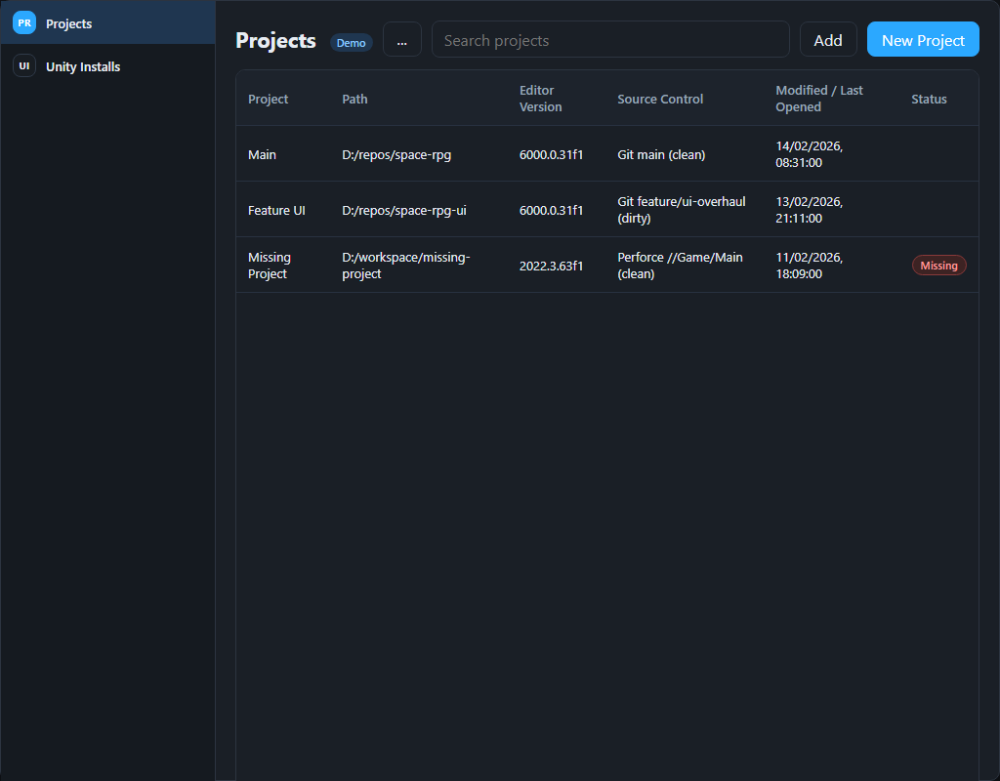

Projects
Demo
...
Open settings
Remove selected project
Add
Add from disk
Add from repo
New Project
Project
Path
Editor Version
Source Control
Modified / Last Opened
Status
Remove
Refresh
Demo mode with mock data
Installs
Demo
Refresh Installs
Version
Path
Source
Status
Click an install row to launch that editor (mock).
Settings
Demo
Default Unity executable
Theme
Match System
Dark
Light
Save Settings
Remove Missing Projects
Theme changes apply immediately after saving.
Add from disk
Project folder
Nickname
Cancel
Add project
Add from repo
Repository URL
Branch (optional)
Clone to folder
Nickname
Cancel
Clone and add